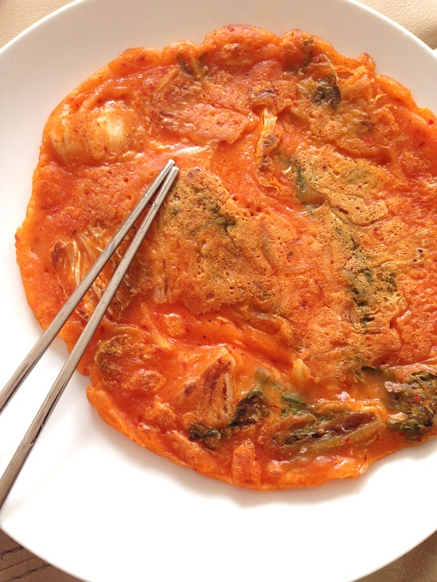

Kimchi Pancake

Kimchi pancakes is one of my go to dishes I create
when I have a large volume of old sour pungent kimchi
in my fridge. It's such a great way to use it up as I
can use as much as my heart's desire.
Kimchi pancakes are a savory pancake commonly made with
wheat flour. It is made with a bit of seasoning and loads of kimchi!
The Korean name for kimchi pancakes is Kimchi Buchimgae (김치 부침개),
but some people might also call it Kimchi Jeon (김치전).
- 2 & 1/2 cup all-purpose flour
- 2 & 1/2 cup water
- 1/2 tsp fine sea salt
- 1 large egg, beaten
- 2 cups kimchi
- 5 ice cubes (about 100g)
- (optional) 2 green chili
- (optional) 1 red chili
- vegetable cooking oil
- Homemade
kimchi pancake dipping sauce
- Make the pancake batter per the following. Sieve the flour and the salt.
Add the water and whisk it well. Add the beaten egg, Kimchi, Kimchi liquid
and chilies. Mix them well. Add the ice cubes to keep the batter cold.
- Pre heat a pan / skillet until well heated. Put a generous amount of
cooking oil into the pan. Make sure the oil is spread all the way
over the pan.
- Scoop out the pancake mixture with a ladle, pour it out on the pan.
Make sure it is evenly spread.
- Cook the mixture on high heat initially for 10 to 20 seconds then
reduce the heat to medium to low. (Cook and finish with this
temperature setting.)
- Turn the pancake over when 70% of the pancake is cooked. (Per
the above picture - Meaning the bottom of the pancake is cooked and
the top of the pancake is also partially cooked. This makes it easy
to turn the pancake.). Press the pancake with the spatula a couple
of times to make it crispy.